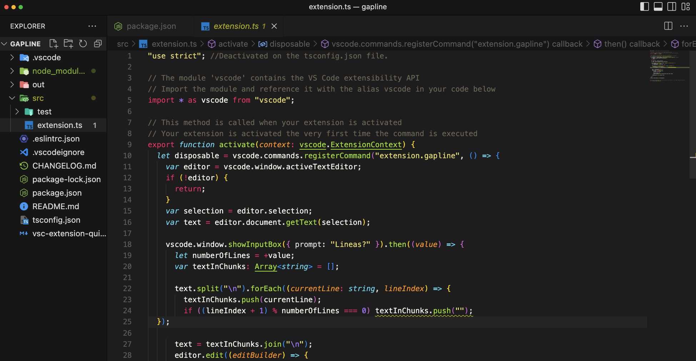

Trabajo: Creación de una extensión para Visual Studio Code
Nombre del alumno: Carlos Pano Hernández
Descripción del trabajo:
Para esta actividad, se propone realizar una extensión de Visual Studio Code, con el objetivo de practicar la programación en Javascript (y conocer de paso TypeScript). Dicha extensión, ejecutará n saltos de línea al contenido de cualquier archivo.
Para esta actividad, se propone realizar una extensión de Visual Studio Code, con el objetivo de practicar la programación en Javascript (y conocer de paso TypeScript). Dicha extensión, ejecutará n saltos de línea al contenido de cualquier archivo.
Proceso de desarrollo
- Se comenzó con la instalación de las paqueterías:
- "Yeoman": Nos permite generar el esqueleto inicial de un proyecto web.
- "Generator-Code": Extensión de Yeoman para la creación de "extensiones".
Se instalaron en nuestro sistema de manera global:
npm install -g yo generator-code typescript
- Terminada la instalación, se procedió con la configuración inicial de nuestra extensión: "gapline"
Misma configuración que se traduce en el siguiente archivo JSON:
Ver package.json file{ "name": "gapline", "displayName": "Line Gapper", "description": "Create a gap between lines", "version": "0.0.1", "engines": { "vscode": "^1.73.0" }, - Continuando con el desarrollo de la actividad, se abrió el proyecto generado en nuestro VS Code: 
- Se tomó esta oportunidad para comentar el código y funciones proporcionadas por nuestro profesor:
Ver código comentado en GitHub
"use strict"; //Deactivated on the tsconfig.json file. // The module 'vscode' contains the VS Code extensibility API import * as vscode from "vscode"; // Import the module and reference it with the alias vscode in your code below // This method is called when your extension is activated export function activate(context: vscode.ExtensionContext) { // Your extension is activated the very first time the command is executed let disposable = vscode.commands.registerCommand("extension.gapline", () => { var editor = vscode.window.activeTextEditor; //Inicializa el editor de texto if (!editor) { return; } var selection = editor.selection; //Estado de nuestro usuario: selección. El programa recorrerá solo el texto seleccionado var text = editor.document.getText(selection); //Guarda el texto seleccionado por el usuario vscode.window.showInputBox({ prompt: "Lineas?" }).then((value) => { //Crea input para usuario de número de líneas a saltar. Después de enter, la función continúa con el programa let numberOfLines = +value; //Genera nuestra variable con el input del usuario. var textInChunks: Array= []; //Genera array/stack deL CONTENIDO (vacío) text.split("\n").forEach((currentLine: string, lineIndex) => { //Llama a la función "split" para detectar cada salto de línea y recorre el string completo con un ForEach. textInChunks.push(currentLine); //Agrega a nuestro stack vacío el contenido de cada línea. if ((lineIndex + 1) % numberOfLines === 0) textInChunks.push(""); //Llama nuestra variable "numberOfLines" para hacer el salto correspondiente }); text = textInChunks.join("\n"); //Junta nuestro nuevo array con salto de línea "\n" editor.edit((editBuilder) => { var range = new vscode.Range( selection.start.line, 0, selection.end.line, editor.document.lineAt(selection.end.line).text.length ); editBuilder.replace(range, text); }); }); }); context.subscriptions.push(disposable); //Variable de entorno } export function deactivate() {} //Extension in deactivated: Calls this function in case the ext. is no longer required by the user - Se cambiaron las llamadas a las funciones para poder iniciar con las pruebas:
"activationEvents": [ "onCommand:extension.gapline" ], "contributes": { "commands": [ { "command": "extension.gapline", "title": "Generate Gapline" }
Pruebas de funcionamiento
Una vez terminada la creación de nuestra extensión, se realizaron las pruebas correspondientes con diferentes "n" en un archivo MD: